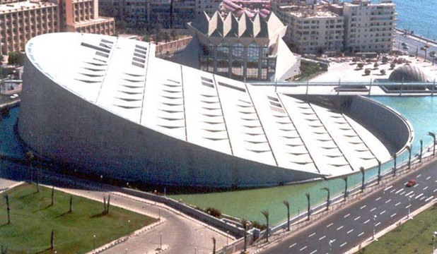
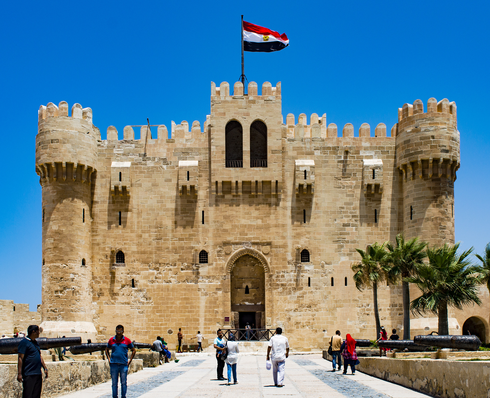
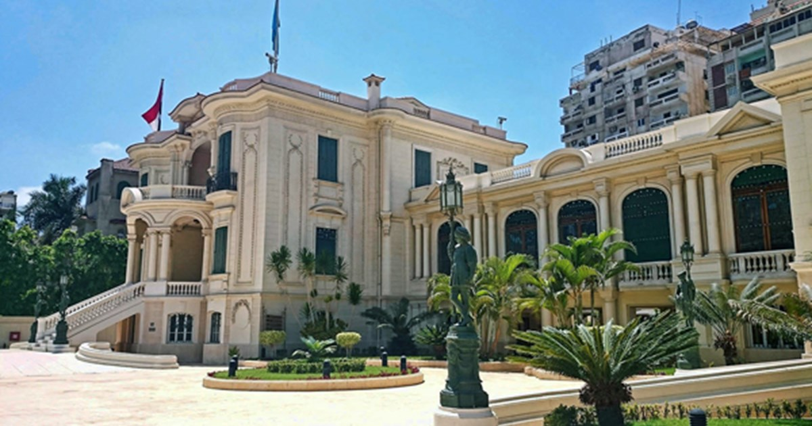
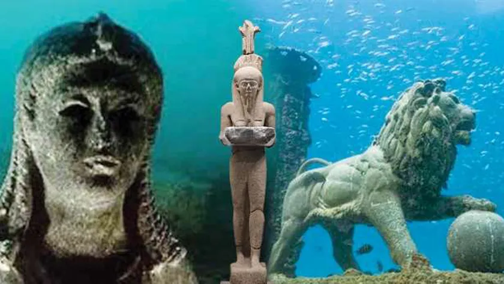
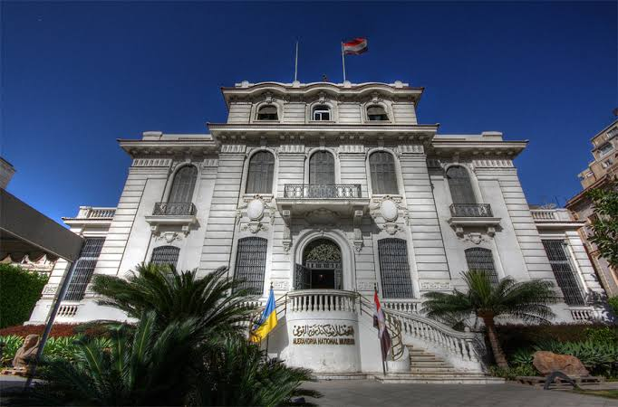
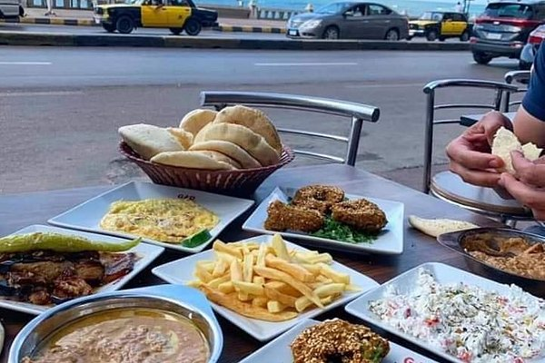
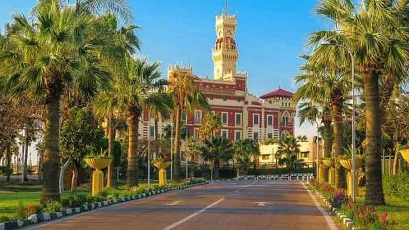
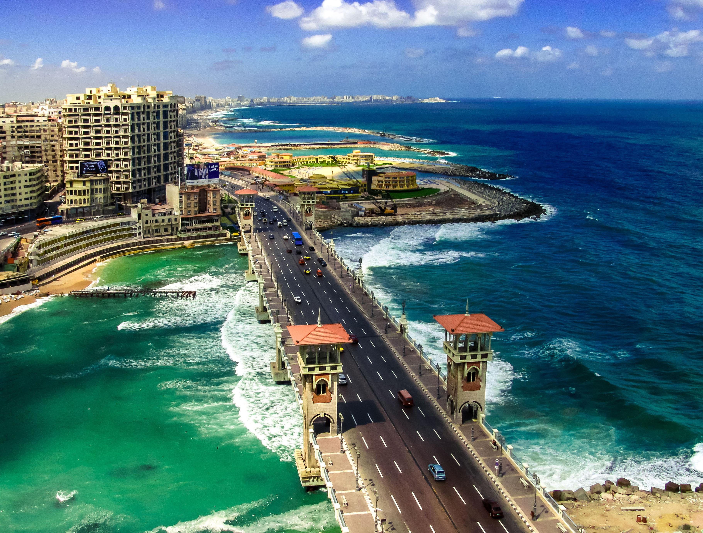

أفضل أماكن سياحية في الإسكندرية
الإسكندرية هي التاريخ والحضارة والمجد، زي ما قال أمير الشعراء أحمد شوقي، لكنها كمان عظيمة بأهلها الطيبين وبصحبتهم الحلوة إللي صعب تلاقي زيهم في أي مكان في العالم. ولو زرت عروس البحر المتوسط، متحتارش كتير، بنقدّملك ١٠ أماكن لازم تزورها في الإسكندرية، منها مطاعم وكافيهات وكمان أماكن سياحية
📚 مكتبة الإسكندرية
كورنيش الإسكندرية – باب شرقي مكتبة الإسكندرية القديمة إللي بناها الإسكندر الأكبر في قديم الزمان بقت ذكرى دلوقتي، لكن مكتبة الإسكندرية العصرية إللي اتبنت مكانها وافتتحت في عام ٢٠٠٢، هي مثال حيّ على عظمة المعمار ده، لو لسه كان موجود بيننا لغاية دلوقتي! التحفة المعمارية ده أكبر من مجرد مكتبة كبيرة، لأنها بتضمّ معارض فنية ومتاحف كتيرة وقبة سماوية وغيرها. ودايمًا بنكتشف حاجة جديدة لما بنزورها كل مرة! Bibalex.org :استكشف المكتبة من خلال الرابط ده
🏰 قلعة قايتباي
الميناء الشرقي – الجمرك
مِن أشهر معالم الإسكندرية السياحية، واتبنت قبل أكتر من ٥٠٠ سنة مكان فنار الإسكندرية القديم، وهو بالمناسبة واحد مِن عجائب الدنيا السبع القديمة! ولو بتحبّ المشي جَنب البحر مع أكل أيس كريم من عند محل “مكرم” أو “عزة”، خصوصًا في أيام الصيف الحر جدًا، ننصحك تزور قلعة قايتباي وتحطّها أول مكان تروحه في الإسكندرية! كمان للي حابب يستمتع بتجربة صوفية مش هتتكرر، ننصحهم بزيارة جامع المرسي أبو العباس في منطقة بحري، وهو الجامع الموجود فيه ضريح الشيخ أبو العباس المرسي، واحد مِن أشهر كبار الشيوخ الصوفيين
💎 متحف المجوهرات الملكية
٢٧ شارع أحمد يحي – منطقة زيزينيا المبنى ده في حدّ ذاته تُحفة معمارية، سواء في الزخرفات الداخلية أو اللوحات الجدارية أو حتى في زجاج شبابيكه الملوّن الجميل! وللمهتمين بالتاريخ، الفيلا ده اتصممت على الطراز الأوروبي وكانت من ممتلكات الأميرة فاطمة الزهراء وهي واحدة من أميرات الأسرة المالكة. ولو انتقلنا إلى التحف والمجوهرات الموجودة في المتحف، هنلاقي باقة من أجمل وأروع الساعات والعملات الأثرية المتنوّعة إللي بتعود للعصور الرومانية والبيزنطية والفارسية وكمان القبطية، ناهيك بالأوسمة والقلائد المصرية والتركية والأجنبية المرصّعة بالمجوهرات والدهب اللي كانت بتخص أفراد أسرة محمد علي باشا! :اعرف اكتر عن متحف المجوهرات الملكية من اللينك ده Egyptianmeuseums.net
🌊 قصر كليوباترا الغارق
الميناء الشرقي هتحتاج تعمل رحلة غطس تحت الميه علشان تزور وتشوف اللي اتبقّى من آثار “قصر كليوباترا” أو “الحي الملكي الغارق”، وهو من أشهر الآثار الغارقة على مستوى العالم، وبيُعتقد إن الآثار ده غرقت بسبب زلزال كبير ضرب سواحل الإسكندرية قبل أكثر من ١٤٠٠ سنة! العمق مش كبير قوي، تقريبًا ١٠ متر، يعني حتى لو كُنت مبتدئ في الغوص، الموضوع مش هيكون صعب! لكن، تخيّل معانا تجربة الاستمتاع بالفرجة على الشوارع القديمة وتماثيل أبو الهول والسواري والأعمدة وهي بتظهر من الميه ده! كمان فيه خطط لعمل نفق زجاجي تحت المياه مستقبلاً. باختصار، لازم تزور قصر كليوباترا بأي تمن! :استكشف رحلات الغوص لقصر كليوباترا من اللينك ده Alex-dive.com
🏺 متحف الإسكندرية القومي
شارع الحرية – باب شرقي
المتحف ده عبارة عن قصر مبني على الطراز الإيطالي، بناه تاجر مِن تجار الخشب الأغنياء في الإسكندرية، لكنه اتحوّل إلى متحف في السنوات الأخيرة مع تجديده بالكامل. المتحف بيضمّ قطع أثرية كتيرة منها قطع بتعود للعصر الفرعوني والروماني والبيزنطي والإسلامي. وفي المتحف كمان مسرح في الهواء الطلق لتقديم عروض عليه بالليل.
أعرف أكتر عن المتحف من اللينك ده: http://www.egypt.travel/attractions/alexandria-national-museum/
>
🍽️ أكلات الشوارع
زيّ كتير من شعوب البحر المتوسط، بنحبّ الأكلات الشهيّة والمشروبات اللذيذة إللي بيقدمها البياعين هنا على عربيات أو في أماكن مختلفة في شوارع الإسكندرية. الكل بيحبّ غزل البنات والترمس والبطاطا (أكلة حلوة قوي بالذات في الشتاء). أما العصائر، فيه عصير القصب والتمر هندي والخروب والعرقسوس والسوبيا (عبارة عن خليط لذيذ من الشعير واللبن وجوز الهند). ولو إنت على البحر، لازم تاكل الفريسكا (عبارة عن أقراص بسكويت رفيعة مخلوطة بالعسل والمكسرات).
☕ ثقافة الكافيهات والقهاوي

كتير من زوّار الإسكندرية بيحبوا القهاوي والكافيهات الكبيرة والمشهورة زي “تريانون” و”بودرو” و”أتينيوس”، ومعظمها قهاوي وكافيهات زارها كبار الشعراء والكتاب زي “فورستر” و”كفافيس” (الشقة إللي كان عايش فيها في منطقة العطارين اتحولت إلى متحف دلوقتي). فيه كمان قهاوي وكافيهات عصرية زي “بريو آند شو” (على شارع الحرية، جرّب عندهم شوربة الشيكولاتة)، أو “لاتينو” (على طريق مصر الإسكندرية الصحراوي)، وجرّب عندهم الزلابية مع مشروب الشيكولاتة السخنة.
🌳 حدائق المنتزه
بحري المنتزه – قصر المنتزه
حدائق المنتزه بطلّتها الساحرة على البحر المتوسط كانت في يوم من الأيام مصيف رئيسي للعيلة المالكة لغاية عصر فاروق الأول، وهي على مساحة كبيرة جدًا ودلوقتي بقت مزار يقدر أي شخص يتمشى فيها ويستمتع بأشجارها العتيقة وأحواض الزهور النادرة فيها. باختصار، هي مكان رائع للهروب من حرّ الصيف والاستمتاع بضل أشجارها العملاقة. وبتمتد الحدائق لغاية شاطئ المنتزه وهي اختيار رائع للعائلات واللي بيحبوا التمشية ساعة الغروب.
🌅 كوبري ستانلي
منطقة ستانلي من العادات المشهورة جدًا في الإسكندرية إنك تتمشّى على كوبري ستانلي وتشوف الشمس ساعة الغروب. جرّب امشي على الكورنيش واستمتع بالفرجة على الأطفال الصغار وهما بيلعبوا حواليك أو كبار السن وهما منهمكين في لعب الطاولة، وبعدها دوّر على كافيه واقعد عليه وتابع آخر أضواء النهار، وبعدها روح علطول لمطعم “مينوش” وكُل أجمل بيتزا إيطالية هناك. صدقني، متعة حقيقية!